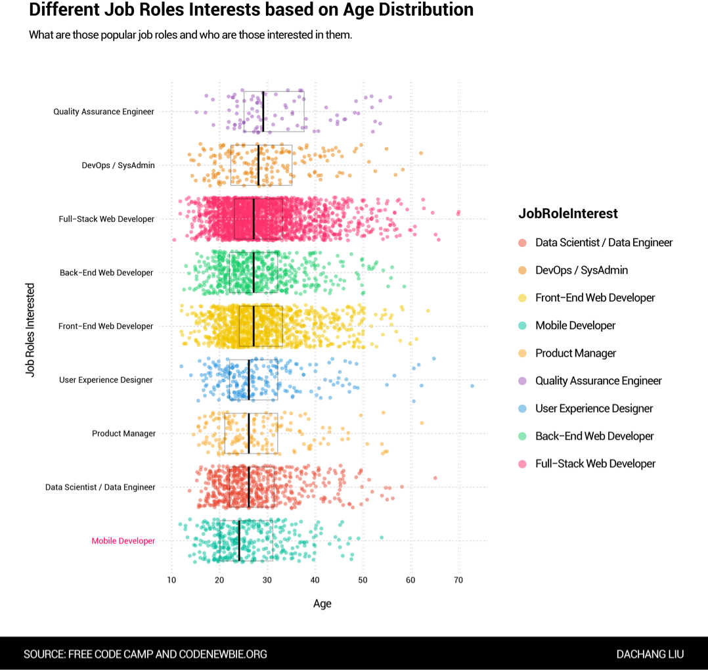

CODE SURVEY 2016 REPORT
2016-12-04
Overview
Free Code Camp and CodeNewbie.org surveyed more than 15,000 people who are actively learning to code. People were reached through the twitter accounts and email lists of various organizations that help people learn to code.
The goal was to understand these people's motivations in learning to code, how they're learning to code, their demographics, and their socioeconomic background.
They’ve released the entire dataset of participants’ individual responses to all 48 questions — under the Open Data Common License — on a public GitHub repository.
Basic Demographics of Participants
To obtain a general cognition of those 15,655 people who participated this survey, we first plotted the age & gender distribution, among which those small gender groups (agender, queer and transexuals) were stacked into one category since they can be barely recognized in the chart if they were plotted as standalone groups.
We also digged into the population of city where participants live, yet it turned out the result only indicated that there are more participants who live in the city that has more population, which is not valuable enough, we got rid of it consequently.

The Income Status
In terms of income, how do people at different ages and gender groups behave? As it is indicated from the density map, they shared similiar patterns as younger generations own high proportion of the total income.
The Learning Budget
People tend to spend more money when they are pursuing to be a full-stack web developer or a front-end web developer. However, the money people spent for learning didn't appear to be related with their income status, which means unlike those major that require high tuitions & student loans such as medical science or jurisprudence, you pay less than that if you are learning programming. It is also the same reason why the second density map is obscuring the results a little bit since the majority were spending less than 5k.
The Gap between Income and Expectation
The gap between income and expected earning had shown a slight decrease as age went up, yet the trend still is not obvious enough. Thus we tuned the plot a little bit by mapping both income and expected earning and connecting them with segments.
The result still shows that there are prople who are making more money now than what they would actually earn if they choose to be a programmer. We may infer that income is not the only factor to consider when chosing career, it could be relatively subjective.

Job Role Interests
Following are the job roles that participants interested in, which is ordered by the median of age. As indicated mobile developers is the 'youngest' job role while QA enginner is the opposite. It is also not hard to see that web developers are the most popular job roles among participants overall.
To get a better observation of those who are new to programming, we shrink the time scale into 24 months since they started. It is interesting to see that there are three obvious milestones in between the processing of learning, still the most popular job roles stays the same with the major trend.

Written by Dachang LiuAll Rights Reserved. Permission needed before repost.